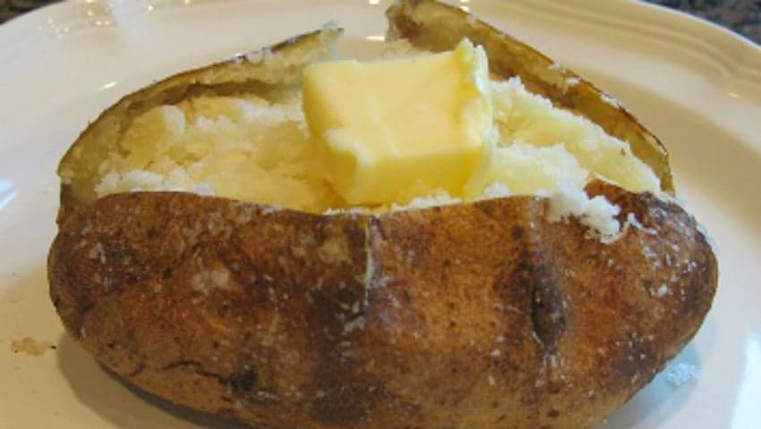
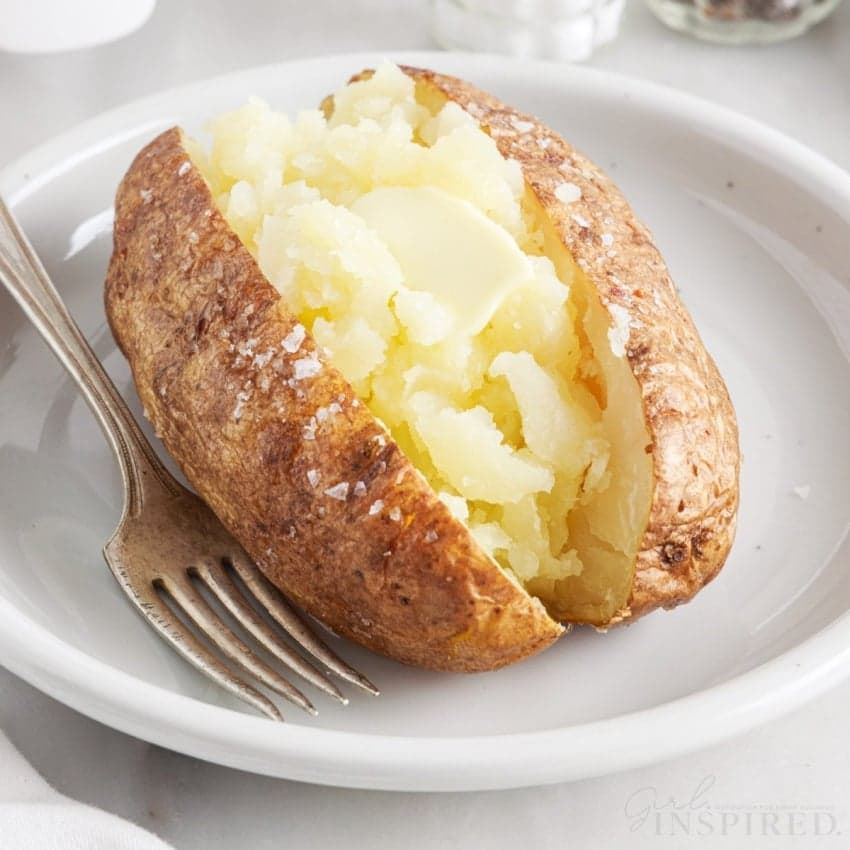
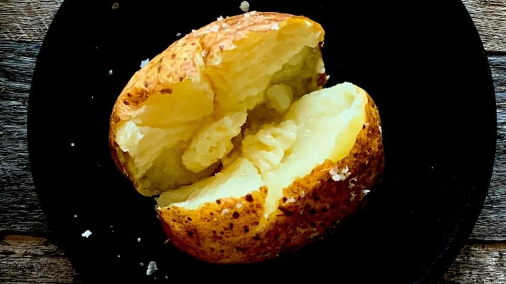
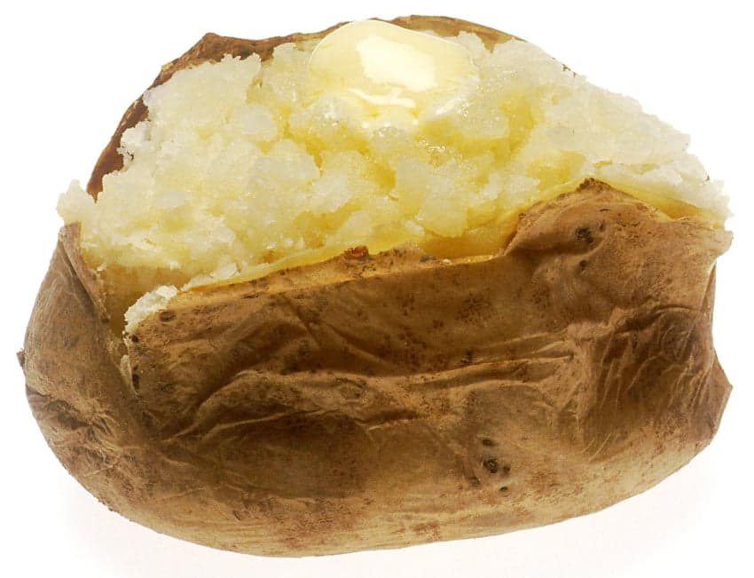
자켓 포테이토
버터, 후추를 뿌려 팔았고 런던에서만 하루 10톤 넘게 팔렸다
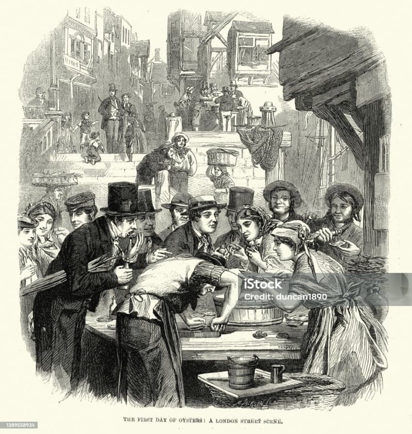
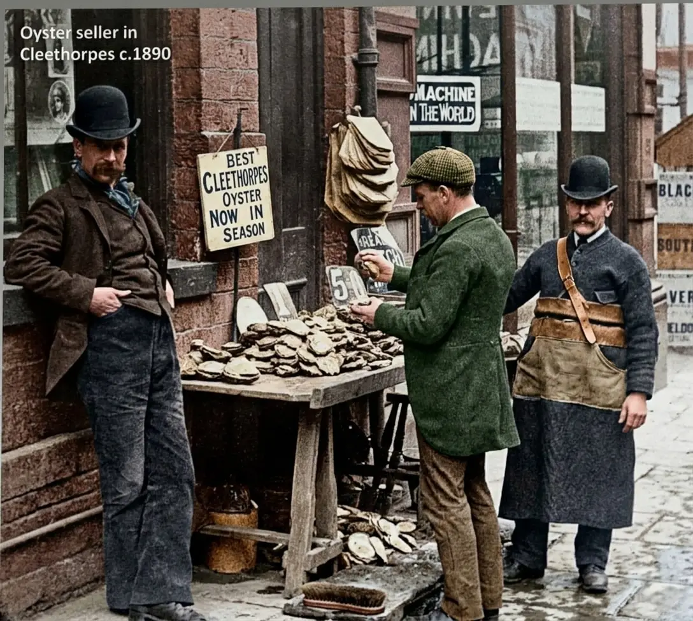
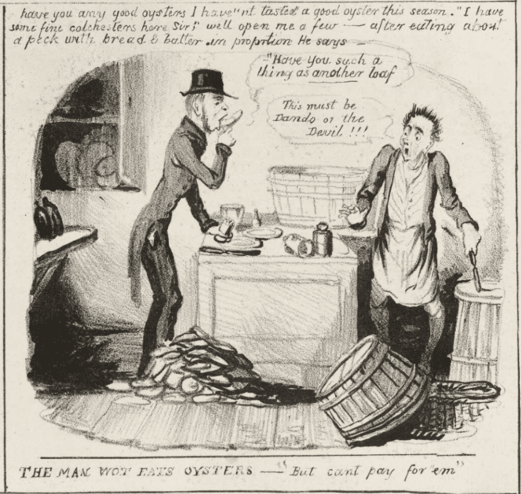
굴
당시에는 싸구려 중 싸구려 음식이었다
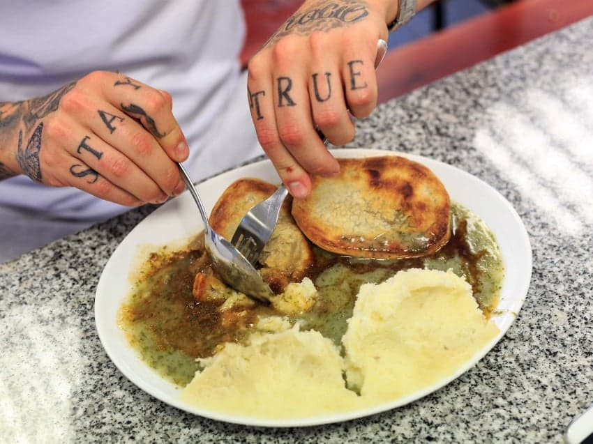
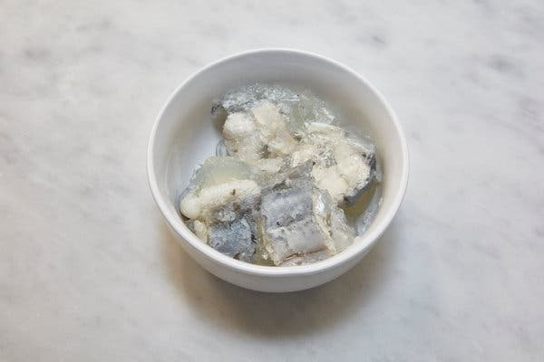
장어
젤리처럼 굳혀 먹거나 파이, 으깬 감자와 같이 먹었다
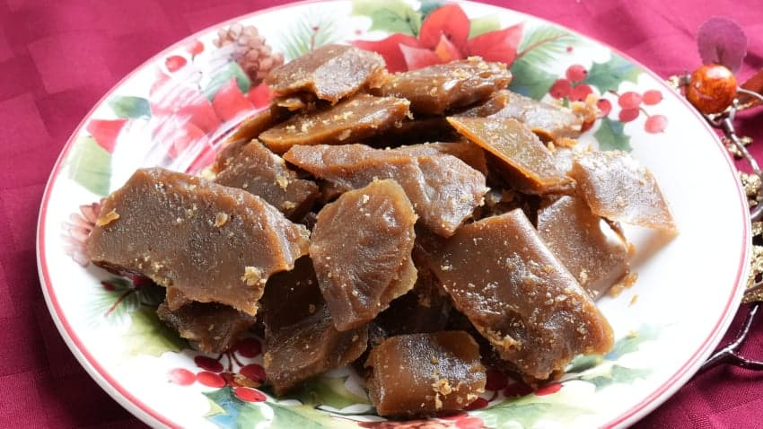
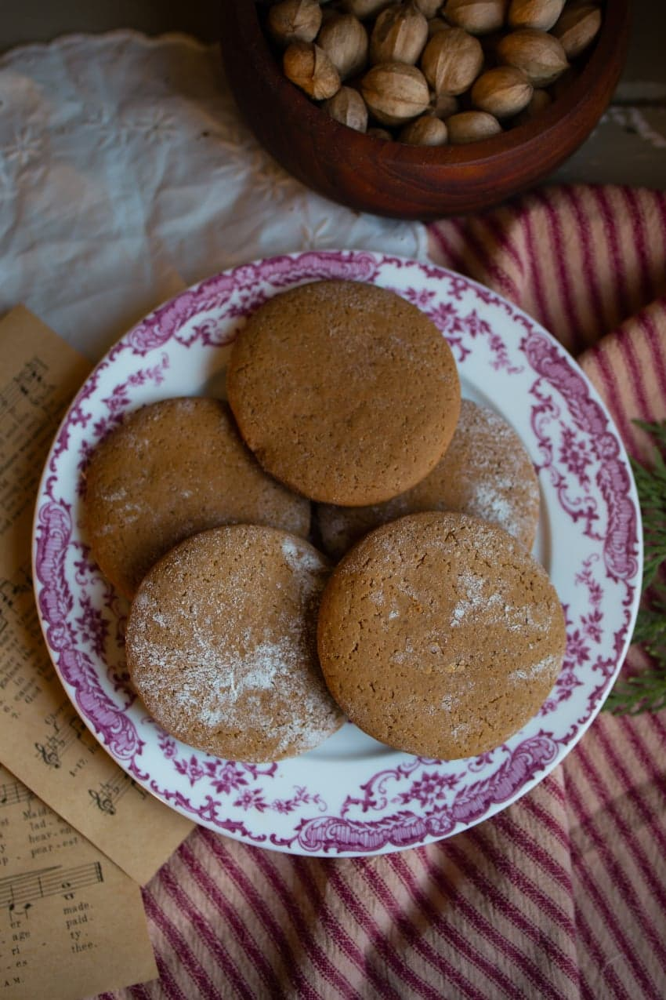
토피, 진저브레드
잼민이들이 디게 좋아했다고 한다
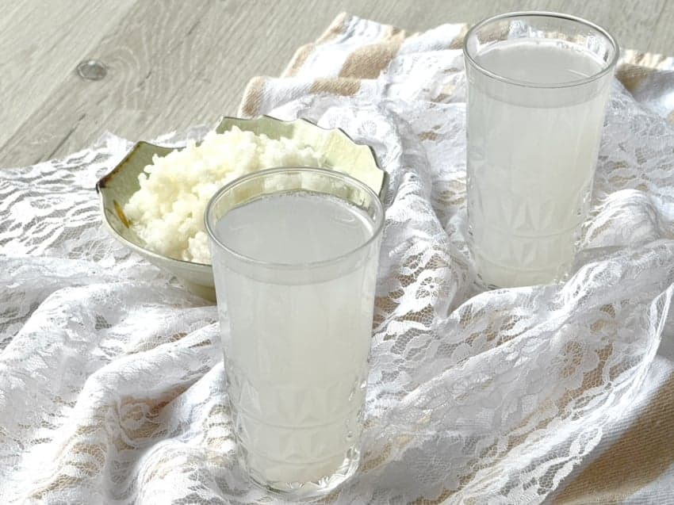
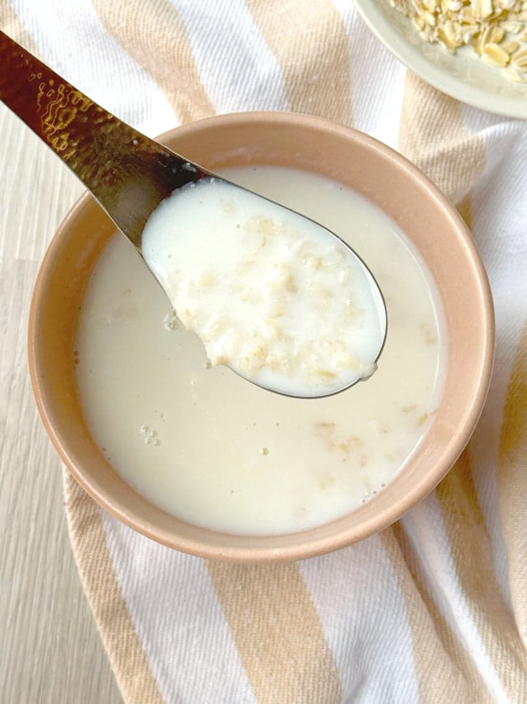
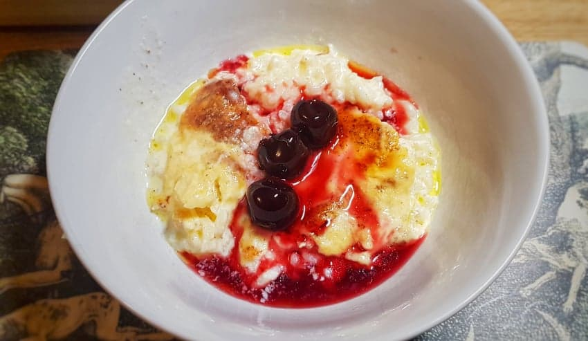
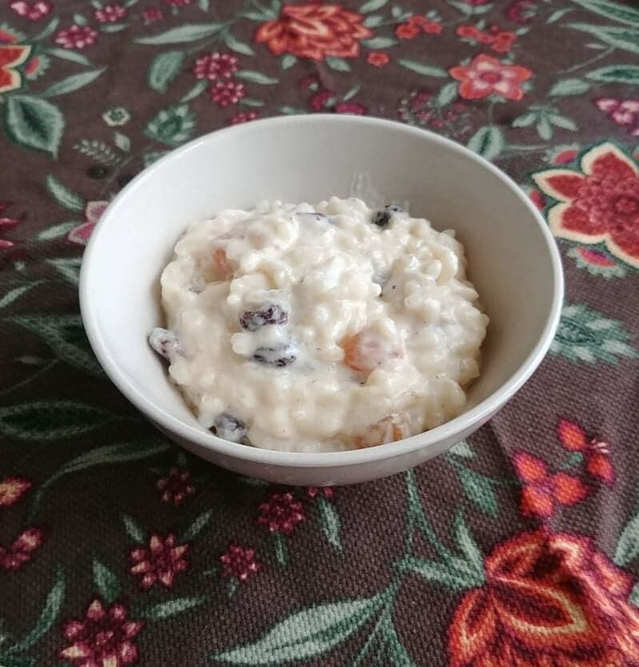
쌀 우유
쌀 푸딩
1849년 The Southern Planter의 보고서에 따르면 쌀 1파운드를 끓여 걸쭉한 녹말 액체 1갤런을 만든 다음, 이를 신선한 우유 1갤런과 섞어 양을 두 배로 늘렸다고 한다.
댓글
수집 당시 댓글 110개
고지보기를불보듯하라 · 11.15 20:02:39
· ㅇㅇ · 11.19 19:23:33
· ㅇㅇ · 11.19 19:55:11
알부자 · 11.15 20:05:07
· 수류탄이야 · 11.15 20:15:05
· 알부자 · 11.15 20:16:00
· ㅇㅇ · 11.15 20:35:38
· ㅇㅇ · 11.15 20:40:18
· 국립중앙나팔관현악단 · 11.15 21:03:36
· ㅇㅇ · 11.15 21:05:42
· 커다라타요 · 11.15 21:50:48
개댇지 · 11.15 20:17:57
· ㅇㅇ · 11.19 19:32:36
ㅇㅇ · 11.15 20:39:16
· 모순 · 11.15 21:02:48
· ㅇㅇ · 11.19 19:24:37
· ㅇㅇ · 11.19 19:52:22
토해짬파 · 11.15 21:11:15
ㅇㅇ · 11.15 21:18:08
· ㅇㅇ · 11.19 19:27:26
림송철 · 11.15 21:49:03
· 림송철 · 11.15 21:49:59
ㅇㅇ · 11.15 21:55:07
ㅇㅇ · 11.15 22:05:13
Elleos · 11.15 22:26:09
밋아 · 11.15 23:19:46
굴
10콜맨 · 11.15 23:55:44
ㅇㅇ · 11.16 00:08:41
· ㅇㅇ · 11.19 19:22:43
かなたん · 11.19 19:15:27
봇치쟝 · 11.19 19:15:54
ㅇㅇ · 11.19 19:17:44
· 수류탄이야 · 11.19 19:18:47
2027asiubi · 11.19 19:18:19
· ㅇㅇ · 11.19 19:55:58
ㅇㅇ · 11.19 19:20:18
ㅇㅇ · 11.19 19:20:36
ㅇㅇ · 11.19 19:20:46
· ㅇㅇ · 11.19 19:20:51
· index · 11.19 19:21:16
· ㅇㅇ · 11.19 19:22:07
· ㅇㅇ · 11.19 19:23:40
· ㅇㅇ · 11.19 19:24:43
· ㅇㅇ · 11.19 19:27:16
· ㅇㅇ · 11.19 19:27:42
· ㅇㅇ · 11.19 19:28:15
· ㅇㅇ · 11.19 19:45:24
· ㅇㅇ · 11.19 19:54:13
한세창 · 11.19 19:21:44
한세창 · 11.19 19:22:14
한세창 · 11.19 19:22:29
한세창 · 11.19 19:22:39
ㅇㅇ · 11.19 19:22:41
· ㅇㅇ · 11.19 19:26:12
· ㅇㅇ · 11.19 19:28:00
한세창 · 11.19 19:22:54
한세창 · 11.19 19:23:01
ㅇㅇ · 11.19 19:24:03
ㅇㅇ · 11.19 19:25:08
· ㅇㅇ · 11.19 19:26:37
· ㅇㅇ · 11.19 19:28:11
· ㅇㅇ · 11.19 19:28:11
· ㅇㅇ · 11.19 19:28:48
· ㅇㅇ · 11.19 19:29:21
· ㅇㅇ · 11.19 19:29:55
· ㅇㅇ · 11.19 19:55:23
· ㅇㅇ · 11.19 19:57:25
ㅇㅇ · 11.19 19:25:31
· ㅇㅇ · 11.19 19:27:26
· ㅇㅇ · 11.19 19:55:42
이지러너 · 11.19 19:26:03
ㅇㅇ · 11.19 19:26:24
DC전사쿠루미쨩 · 11.19 19:26:54
ㅇㅇ · 11.19 19:27:40
파쪼옥 · 11.19 19:28:13
· ㅇㅇ · 11.19 19:39:44
ㅇㅇ · 11.19 19:29:15
ㅇㅇ · 11.19 19:29:17
ㅇㅇ · 11.19 19:30:13
향격쳐 · 11.19 19:31:08
ㅇㅇ · 11.19 19:31:11
ㅇㅇ · 11.19 19:31:24
· ㅇㅇ · 11.19 19:31:29
ㅇㅇ · 11.19 19:33:01
ㅇㅇ · 11.19 19:34:43
오대성 · 11.19 19:36:41
ㅇㅇ · 11.19 19:40:43
ㅇㅇ · 11.19 19:41:44
· ㅇㅇ · 11.19 19:43:32
해갤러 · 11.19 19:42:37
ㅇㅇ · 11.19 19:42:53
한세창 · 11.19 19:43:38
한세창 · 11.19 19:43:53
한세창 · 11.19 19:43:58
ㅇㅇ · 11.19 19:45:44
· ㅇㅇ · 11.19 19:50:06
파리생제르망 · 11.19 19:49:09
ㅇㅇ · 11.19 19:57:19
ㅇㅇ · 11.19 19:58:12
ㅇㅇ · 11.19 19:59:44
ㅇㅇ · 11.15 19:53:50
· ㅇㅇ · 11.15 19:54:28
ㅇㅇ · 11.15 19:54:59
ㅇㅇ · 11.15 19:56:50
· ㅇㅇ · 11.19 19:33:03
· ㅇㅇ · 11.19 19:39:42
· ㅇㅇ · 11.19 19:50:36
메이 · 11.15 19:58:32
메이 · 11.15 19:58:57
· ㅇㅇ · 11.19 19:23:39